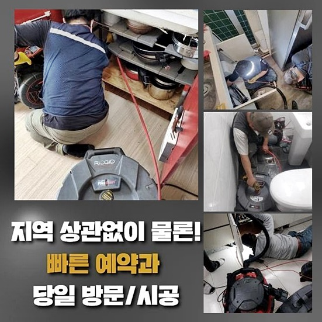
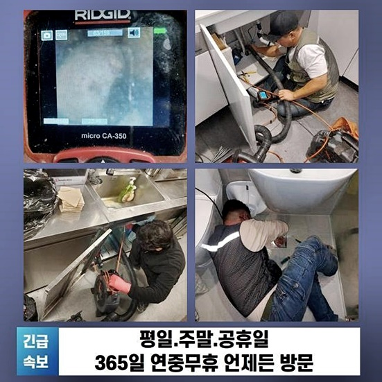
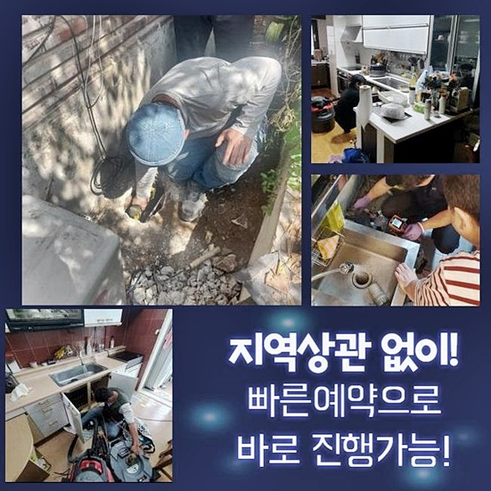
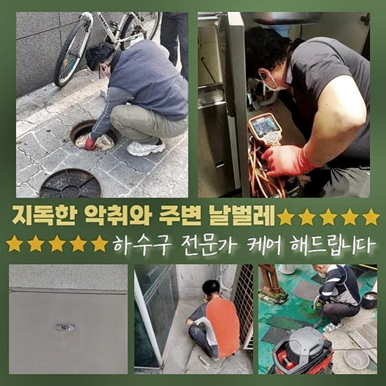
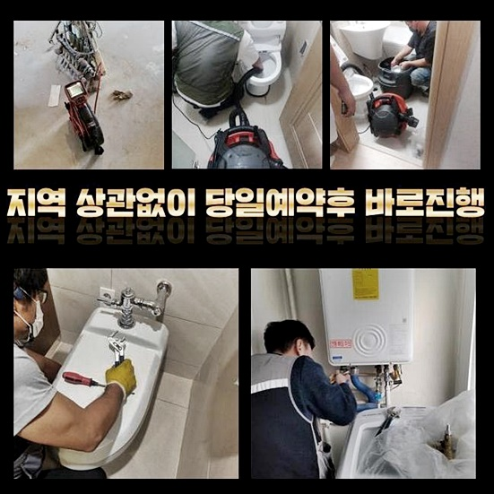

🏠 미추홀구 도화동씽크대배수관막힘 주안동 하수구뚫어주는업체 설비하는곳
용인 싱크대막힘 전문 시공 후기

📋 작업 개요
- 위치: 용인
- 서비스 유형: 싱크대막힘, 하수구막힘, 배관막힘, 누수수리, 역류해결, 뚫는업체, 배관청소, 고압세척, 설비공사, 악취차단
- 작업 일시: 2024. 6. 27. 10:48
- 업체명: 하수구수사대 (010-5615-2118)
🔍 문제 상황
미추홀구 도화동씽크대배수관막힘 주안동 하수구뚫어주는업체 설비하는곳
갑작스럽게 배수관에서 차단이 일어난 사안이 적게나마 존재했을 거라 예측합니다
집 내부에 있는 하수관이 역류를 하는 바람에 배관 뚫음을 이행해보신 기억 또한 알게모르게 존재할 것으로 사료되는데요
배관 안에 이물이 투입되면 초창기에는 별 문제가 나타나지 않지만 지속해서 누적되면 정체가 일어나게 되는거죠
화장실을 쓸 수 없는 상황이 되면 생활 자체의 불편이 늘게 된답니다
문제가 생긴 배관을 처치해 보려고 긴 플라스틱도 넣어보고 여러 약제 등도 적용해 보았는데 해결이 안된다면 욕실 하수관 개문 전문인에게 신속하게 문의하여 수리받으실 것을 권해드립니다
어설픈 대응은 도리어 상황을 안 좋게 만들 수 있다는 사실을 무시해 버리시면 안됩니다
이번 글에선 배수구 세정작업과 관계된 이야기와 갑자기 정체된 형편에서 신속히 처리하는 방책을 선보여 드리겠습니다
금번 소개해드릴 장소와 유사한 차단으로 난관에 봉착해있다면 심도있는 처치가 필요해요
해당 지점은 공장 사장님의 촉박한 요구에 부응하여 즉각 출장하였던 곳이랍니다
업체의 주차장쪽에 설비돼 있는 파이프가 막혀버려 공장 운영에 차질을 빚고 있다고 하셨어요
바로 확인해 보아더니 배관로가 깊이 자리잡고 있었으며 정체가 일어난 처소 또한 멀었답니다 작업이 순탄지 않을 것이라는 점을 예측할 수가 있었죠
빠른 해결이 필요했기에 배관의 측면을 굴착하기로 했어요

🔎 원인 분석
💡 전문가 진단: 정밀 진단 장비를 사용하여 슬러지의 고착 여부를 판명하고 타격/세척 작업을 실시했습니다.
물흐름이 전연 실현되지 않았기에 내측을 관측하기 힘든 상황이었답니다
이에 면밀한 상태 확인이 난해하므로 내시경 촬영설비로 관찰하기로 마음먹었어요
내측에 잔재가 가득하였답니다 정체는 바로 유분 덩어리였습니다
건물관리자께서 세척 용액을 자주 넣어보았으나 차도는 없었다 하시더라고요 관 내의 유동성이 멈추었을 정도로 기름덩이가 전체를 점유하고 있었어요
내시경cctv를 통하여 좀더 면밀하게 들여다보니 집수시설부터 관로까지 이어져있는 부분에 문제가 생겨 액체가 바깥으로 유출된 것이었어요
예상한 것보다 넓은 부위에서 고착화된 슬러지들로 메워 있었답니다
여러 물건들을 취급하는 과정에서 발생한 기름때로 인한 잔재들이 상당히 많아 보였답니다
문의자분에게 중반부의 하수관을 관통하는 것이 효과적이라는 설명을 드린 후 차후 진행방안을 알려드린 다음 본업무에 들어갔어요
업무 진행에 관한 재가를 받은 뒤 실내에 존재하는 하수관에서부터 밖의 시관로를 소제하였어요
노폐물의 양이 상당하였기에 초기 작업을 한 다음에 공장 내부로 이어진 배관도 기기를 활용하여 처치해야 하죠
이번에는 샤프트기기를 가동하여야 되는데요 이 장비는 머릿부분의 쇠사슬이 회전해나가며 내부에 적층된 이물들을 없애는 임무를 맡고 있습니다
간간이 의뢰자께서 고속으로 돌면서 관에 트러블이 나타나지는 않을지에 대해 근심할 때도 계신데요
사용법을 숙지하지 못한 담당자가 대책없이 작동시키는 경우에 그런 상황이 생겨날 수 있겠으나 저희 수준의 전문가에겐 포함되지 않는 다는 것을 설명드립니다
배수관카메라를 통하여 내부 상황을 들여다보면서 이물들이 가득찬 부위와 이유를 분석하고 시공절차에 들어가게 됩니다

🔧 작업 과정
일터에서 배출되는 물속에 각종 쓰레기들이 가득히 채워진 상황이었죠
분쇄기기를 작동하여 쓰레기들을 없애나가는 걸 관찰하시고는 개운한 마음이 든다고 이야기 하시더라고요
긴 구간이었으나 타공부분을 기점으로 해서 꼼꼼히 세정을 실시했답니다
해당 지점에서는 기름찌꺼기가 자주 토출되고 여러 변수로 인해 기름 배출이 될 수 있기 때문에 관리 시스템이 작동된다고 하여도 막힘을 포함한 여러 문제가 나타나는 것이죠
말끔한 모습으로 현장이 바뀌자 보통이 아닌 작업인 것 같다면서 부르길 잘 했다고 하셨어요
시설 안에서 수도 사용을 못하는 모습이 된 건 야외에 매립되어 있는 배수구에서 트러블이 일어났기 때문이랍니다
이러한 문제가 생겨나 버린다면 직원에게도 영양을 주게 됩니다 여러가지 잔재들이 겉으로도 나타날 정도로 상당하게 적체되어 있었죠
장기간 세정과 관련한 업무를 하지 않았다 이야기해 주셨어요
그래서 배수구를 통해 여러가지의 유분이 적체되었다는 것을 알아내게 되었어요
건축물 자체가 낙후되었기에 배수관 역시 낙후되었을 여지가 있는데요
배관이 낡아지는 것도 배관막힘이 일어났을 경우에 심화될 수 있다는 점을 잊지 말아야 합니다
노폐물들이 단단해지면 물의 흐름을 방해하게 되어 배관부속에도 타격을 줄 수 있고 노후화가 심해진 곳에서는 누수가 나타나기도 해요
정체되었던 물질들은 플렉스샤프트를 통해서 충분하게 소멸시킬 수 있었기에 별도의 물세척은 생략할 수 있었어요
고속분쇄 과정을 바탕으로 슬러지들을 전체적으로 없애는 업무를 속행했어요
배수구청소가 평상시 이행되지 않은 장소는 수시로 막힐 수 있으며 물이 역행할 수도 있답니다
재빠르게 배수문의 액체가 밖으로 배출되지 않고 상시와 다른 느낌이 든다면 재빨리 전문가를 수소문하여 도움을 요청하시는 것이 좋답니다
막힘이 일어난 지점은 날짜가 지나게 되면 심중해질 가망이 높죠
재빠른 방문과 수리도 중요하지만 숙련된 담당자를 수소문하는 것 역시 중요하답니다
충분한 업력을 가졌는지 필수적으로 검토해보시길 바라요
완성도 높은 테크닉과 장비 일체 이것에 부합한다면 어떤 난해한 막힘이라도 처치해낼 수 있어요
저희들은 통수작업이 알맞게 진행되도록 첨단 공구류를 갖추고 있습니다
뚫음에 적합한 기계를 이용할 수 있게끔 석션기기를 포함한 전문 기계들을 맞춘 다음에 공사현장으로 이동하고 있어요


✅ 작업 완료
이물들을 밀어내는 과정으로 시공을 하고 배관전용cctv를 동시에 넣어서 안쪽에 고형물들이 잔재하는지 여부를 체크하고 청소를 이어나가고 있어요
이런식으로 공사를 해보시면 노폐물이 고착화되는 상황을 방지할 수 있기에 재막힘에 대한 부분은 거의 없다고 생각하셔도 무방합니다
보는 바와 같이 이물들이 전부 소멸되었어요
특징적인 트러블이 발발하지 않았더라도 예방적인 조처를 진행하는 경우도 많답니다
고객님이 요청하신 시간대에 정확히 내방해 드리며 토요일에도 정상적으로 일하고 있으니 망설이지 말고 문의해 주세요
방관시하지 마시고 이상증세가 포착되면 곧바로 수선하시는 걸 권장합니다


⚠️ 베란다 누수 및 방수 관리 방법
- ✅ 비가 많이 올 때 창틀 주변이나 아래층 천장에 얼룩이 생기는지 정기적으로 확인해 보세요.
- ✅ 우수관 주변 실리콘 마감이 들뜨거나 깨진 틈새가 있는지 손상 여부를 수시로 체크하세요.
- ✅ 베란다 바닥 타일의 줄눈(메지)이 소실되면 그 틈으로 물이 침투하여 누수가 유발됩니다.
- ✅ 누수 의심 증상 발견 시 방치하면 아래층 손실이 커지므로 즉시 전문가의 진단을 받으십시오.
💡 핵심 정리
- 확실한 장비 작업(내시경 점검 및 샤프트 스케일링)으로 원인을 뿌리 뽑습니다.
- 작업 후 1년 이내에 동일한 부위 재발 시 100% 무상 A/S 서비스를 보장합니다.
- 서울 · 경기 · 인천 전 지역에 24시간 언제든 긴급 출동할 수 있도록 항시 대기 중입니다.
❓ 자주 묻는 질문 (FAQ)
🚨 용인 싱크대막힘 문제로 고민이신가요?
정확한 원인 진단과 확실한 시공으로 재발 없는 해결을 약속드립니다.
24시간 긴급 출동 | 서울 · 경기 · 인천 전지역 | 1년 내 재발 시 무상 A/S